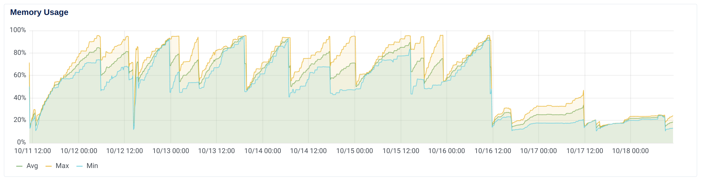

The query itself
Query to update every objects we have in a table (~2 millions).
for offer in Offer.objects.order_by("-created_at"):
offer.offer_limits_meta["applied_payer_credit_limit"] = Money(
offer.offer_limits_meta["applied_payer_credit_limit"], settings.BASE_CURRENCY
)
offer.save()OOM error
Use of servor side cursor.


No need for iterator() as Django does it by default when iterating over a queryset — but can be used to have control over the batch size.
Query is taking too long
- Only load relevent fields.
- Prefer bulk operations
QuerySet.bulk_create()andQuerySet.bulk_update(). - Only update if needed.
chunk_size = 2000
offers_chunk = []
for i, offer in enumerate(
Offer.objects.order_by("-created_at")
.only("offer_limits_meta")
.iterator(chunk_size=chunk_size)
):
dirty=False
if (
offer.offer_limits_meta
and not isinstanceof(
offer.offer_limits_meta.get("applied_payer_credit_limit"),
Money
)
):
offer.offer_limits_meta["applied_payer_credit_limit"] = Money(
offer.offer_limits_meta["applied_payer_credit_limit"],
settings.BASE_CURRENCY
)
dirty = True
if dirty:
offers_chunk.append(offer)
if i % chunk_size == 0 and offers_chunk:
Offer.objects.bulk_update(
offers_chunk,
"offer_limits_meta",
batch_size=1000
)
offers_chunk = []Side notes
Make the migration idempotent and add some logging.
Other database parameters
CONN_MAX_AGE and ATOMIC_REQUEST.

The memory performance of the kubernetes cluster after switching to server-side cursor. Can you spot when it was switched on? 😉